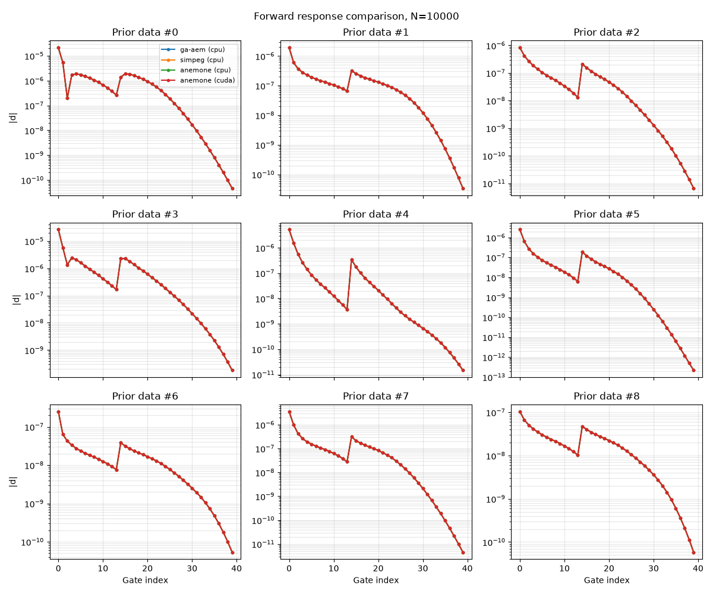

Note
Go to the end to download the full example code.
Compare EM forward models¶
This example computes prior EM data for the same set of prior models with each of the available EM forward backends, and compares them:
ga-aem(CPU)simpeg(CPU)anemone(CPU and CUDA GPU)
It prints the run time for each backend and plots the forward response of the first 9 prior realizations, with all backends overlaid in each panel.
All backends in the method/device lists below must be installed (and
a CUDA GPU must be available for device='cuda'); edit the lists to
compare a subset.
import integrate as ig
import time
case = 'DAUGAARD'
files = ig.get_case_data(case=case, showInfo=2)
f_data_h5 = files[0]
file_gex= files[1]
print("Using data file: %s" % f_data_h5)
print("Using GEX file: %s" % file_gex)
Getting data for case: DAUGAARD
Downloading DAUGAARD: 0%| | 0/4 [00:00<?, ?it/s]File DAUGAARD_AVG.h5 already exists. Skipping download.
File TX07_20231016_2x4_RC20-33.gex already exists. Skipping download.
File daugaard_12boreholes.json already exists. Skipping download.
File README_DAUGAARD already exists. Skipping download.
Downloading DAUGAARD: 100%|██████████| 4/4 [00:00<00:00, 73262.95it/s]
--> Got data for case: DAUGAARD
Using data file: DAUGAARD_AVG.h5
Using GEX file: TX07_20231016_2x4_RC20-33.gex
Select how many prior model realizations (N) should be generated
N=2_000_000
#N=1_000_000
N=10_000
f_prior_h5 = ig.prior_model_layered(N=N,lay_dist='uniform', NLAY_min=8, NLAY_max=8, RHO_min=1, RHO_max=3000, f_prior_h5='PRIOR_N%d.h5' % N,
showInfo=0)
#print('%s is used to hold prior realizations' % (f_prior_h5))
prior data
method = ['ga-aem','simpeg','anemone','anemone']
device = ['cpu','cpu','cpu','cuda']
#method = ['anemone']
#device = ['cuda']
t_run = []
D_all = []
for i in range(len(method)):
t0=time.time()
f_prior_data_h5 = ig.prior_data_em(f_prior_h5, file_gex, doMakePriorCopy=False, id=1,
method=method[i], device=device[i], showInfo=1)
# f_prior_data_h5 = ig.prior_data_em(f_prior_h5, file_gex, doMakePriorCopy=True,
# f_prior_data_h5='PRIOR_DATA_N%d.h5_%s_%s' % (N, method[i],device[i]),
# method=method[i], device=device[i], showInfo=0)
D = ig.load_prior_data(f_prior_data_h5)[0][0]
D_all.append(D)
t_run.append(time.time()-t0)
Using EM forward method: ga-aem
prior_data_gaaem: TDEM/ga-aem -- starting
Forcing open and close of PRIOR_N10000.h5
writing LM to /home/tmeha/PROGRAMMING/integrate_module/examples/gallery/10_getting_started/TX07_20231016_2x4_RC20-33-P-tTEM42_LM.stm
writing HM to /home/tmeha/PROGRAMMING/integrate_module/examples/gallery/10_getting_started/TX07_20231016_2x4_RC20-33-P-tTEM42_HM.stm
prior_data_gaaem: Using 32 parallel threads.
/home/tmeha/.local/share/uv/python/cpython-3.13.13-linux-x86_64-gnu/lib/python3.13/multiprocessing/popen_fork.py:67: RuntimeWarning: os.fork() was called. os.fork() is incompatible with multithreaded code, and JAX is multithreaded, so this will likely lead to a deadlock.
self.pid = os.fork()
prior_data_gaaem: Time= 18.6s/10000 soundings. 1.9ms/sounding, 537.7it/s
Loading prior data from PRIOR_N10000.h5. Using prior data ids: []
- /D1: N,nd = 10000/40
Using EM forward method: simpeg
gex_to_em_system: 2 moment(s), loop area 8 m^2, tx_z=0.36 m, rx offset (-9.15, 0.0) dz=+0.03 m, gates 14 + 26
forward_simpeg: nd=10000, nl=91, n_used=40, altitude bins=1, gate_integration=bfield, setup 2.02s
forward_simpeg: 32 processes, 32 chunks
forward_simpeg: Time= 12.0s/10000 soundings, 1.2ms/sounding
prior_data_simpeg: Time= 12.0s/10000 soundings. 1.2ms/sounding, 831.6it/s
Key '/D1' already exists in PRIOR_N10000.h5. Use force_replace=True.
Loading prior data from PRIOR_N10000.h5. Using prior data ids: []
- /D1: N,nd = 10000/40
Using EM forward method: anemone, device: cpu
forward_anemone: compressed 91 -> 8 layers (batch max)
prior_data_anemone[cpu]: Time= 7.1s/10000 soundings. 0.7ms/sounding, 1399.1it/s
Key '/D1' already exists in PRIOR_N10000.h5. Use force_replace=True.
Loading prior data from PRIOR_N10000.h5. Using prior data ids: []
- /D1: N,nd = 10000/40
Using EM forward method: anemone, device: cuda
forward_anemone: compressed 91 -> 8 layers (batch max)
prior_data_anemone[gpu]: Time= 1.4s/10000 soundings. 0.1ms/sounding, 7060.6it/s
Key '/D1' already exists in PRIOR_N10000.h5. Use force_replace=True.
Loading prior data from PRIOR_N10000.h5. Using prior data ids: []
- /D1: N,nd = 10000/40
print('\nForward timing, N=%d' % N)
print('%-10s %-6s %10s %14s' % ('method', 'device', 'time [s]', 'ms/sounding'))
for i in range(len(method)):
print('%-10s %-6s %10.1f %14.3f' % (method[i], device[i], t_run[i], 1000*t_run[i]/N))
Forward timing, N=10000
method device time [s] ms/sounding
ga-aem cpu 18.6 1.861
simpeg cpu 12.1 1.213
anemone cpu 7.6 0.758
anemone cuda 1.4 0.142
import matplotlib.pyplot as plt
import numpy as np
fig, axs = plt.subplots(3, 3, figsize=(12, 10), sharex=True)
for k, ax in enumerate(axs.flat):
for i in range(len(method)):
ax.semilogy(np.abs(D_all[i][k]), '.-', label='%s (%s)' % (method[i], device[i]))
ax.set_title('Prior data #%d' % k)
ax.grid(True, which='both', alpha=0.3)
for ax in axs[-1, :]:
ax.set_xlabel('Gate index')
for ax in axs[:, 0]:
ax.set_ylabel('|d|')
axs.flat[0].legend(fontsize=8)
fig.suptitle('Forward response comparison, N=%d' % N)
fig.tight_layout()
plt.savefig('tiny_forward_compare_N%d.png' % N)
plt.show()

Total running time of the script: (0 minutes 40.703 seconds)